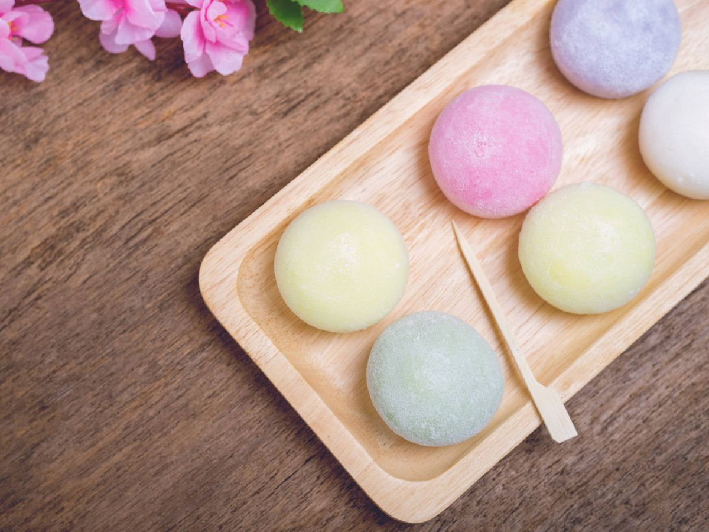

Mochis Japoneses
"Japón y España comparten muchos valores en la cocina: el amor por el arroz, por freír, el amor por la parrilla, los mariscos, los crustáceos, el marinado en vinagre... si te fijas, estamos profundamente conectados"

Ingredientes:
- Harina de arroz glutinoso para la masa 125g
- Azúcar para la masa 50g
- Agua fría para la mesa 165 ml
- Fécula de patata para trabajar la masa
- Nata líquida para montar para el relleno 220 g
- Azúcar glasé para el rellno 25 g
- Gelatina en láminas para el relleno 2
- Esencia de vainilla gotas para el relleno 2
Preparación
- Empezamos haciendo nuestros mochis con el relleno, remojando la gelatina y disolviéndola en 20 gramos de nata. Luego montamos el resto de la nata con el azúcar y le añadimos los otros 20 gramos con la gelatina. Congelamos la masa en moldes semiesféricos aptos para congelador de unos 2,5 centímetros de diámetro, donde estarán un par de horas.
- Pasado ese tiempo nos ponemos a hacer la masa, mezclando en un bol todos los ingredientes con la varilla —mejor si es eléctrica—.
- Filmamos el bol y cocinamos la masa un minuto de micro a tope de potencia 850-900W. Sacamos, removemos y repetimos la misma operativa un par de veces más.
- Para formarlos, vamos cogiendo porciones de unos 25 gramos de masa, enharinando los dedos con la fécula de patata para que no se pegue.
- Extendemos, ponemos un núcleo de nata congelado en el centro y dejando el pliegue hacia abajo, para que se cierre por su propio peso.
- Metemos los mochis en la nevera y dejamos que el núcleo se descongele unos 20 minutos y ya estarán listos para consumir.
Información Nutricional
- Tamaño de la Porción
- 100g
- Energía
- 788 kj (188 kcal)
- Grasa
- 0,13g
- Carbohidratos
- 45,47g
- Azúcar
- 27,19g